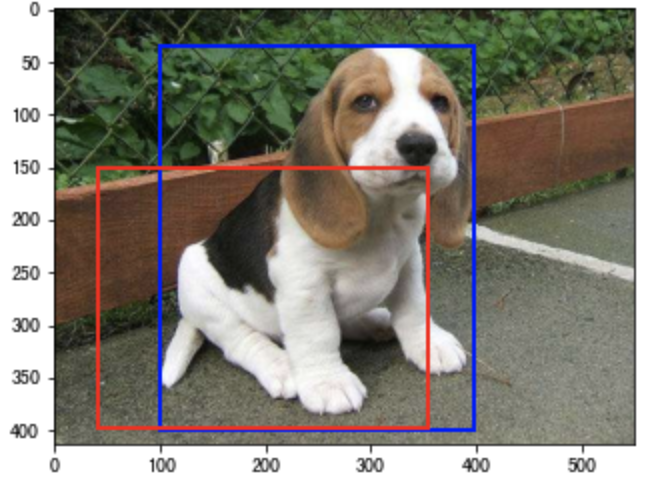
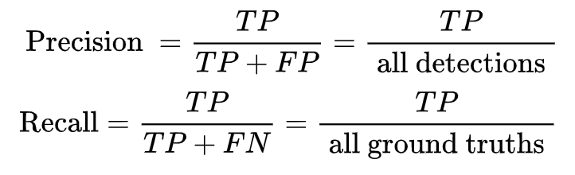

4.1 目标检测概述¶
学习目标
- 了解目标检测的任务
- 知道目标检测的常用数据集
- 知道目标检测算法的评价指标
- 掌握非极大值NMS算法的应用
- 了解常用的目标检测算法分类
1. 目标检测¶
目标检测（Object Detection）的任务是找出图像中所有感兴趣的目标，并确定它们的类别和位置。
目标检测中能检测出来的物体取决于当前任务（数据集）需要检测的物体有哪些。假设我们的目标检测模型定位是检测动物（牛、羊、猪、狗、猫五种结果），那么模型对任何一张图片输出结果不会输出鸭子、书籍等其它类型结果。
目标检测的位置信息一般由两种格式（以图片左上角为原点(0,0)）：
1、极坐标表示：(xmin, ymin, xmax, ymax)
- xmin,ymin:x,y坐标的最小值
- xmin,ymin:x,y坐标的最大值
2、中心点坐标：(x_center, y_center, w, h)
- x_center, y_center:目标检测框的中心点坐标
- w,h:目标检测框的宽、高
假设在下面的图像中进行检测，：
那目标检测结果的中心点表示形式如下所示：
2.常用的开源数据集¶
经典的目标检测数据集有两种，PASCAL VOC数据集 和 MS COCO数据集。
2.1 PASCAL VOC数据集¶
PASCAL VOC是目标检测领域的经典数据集。PASCAL VOC包含约10,000张带有边界框的图片用于训练和验证。PASCAL VOC数据集是目标检测问题的一个基准数据集，很多模型都是在此数据集上得到的，常用的是VOC2007和VOC2012两个版本数据，共20个类别，分别是：
也就是：
1.人: 人
2.动物: 鸟，猫，牛，狗，马，羊
3.交通工具: 飞机，自行车，船，公共汽车，汽车，摩托车，火车
4.室内: 瓶子，椅子，餐桌，盆栽，沙发，电视/显示器
下载地址：https://pjreddie.com/projects/pascal-voc-dataset-mirror/
整个数据的目录结构如下所示：
其中：
-
JPEGImages存放图片文件
-
Annotations下存放的是xml文件,描述了图片信息，如下图所示，需要关注的就是节点下的数据,尤其是bndbox下的数据.xmin,ymin构成了boundingbox的左上角,xmax,ymax构成了boundingbox的右下角，也就是图像中的目标位置信息
-
ImageSets包含以下4个文件夹：
-
Action下存放的是人的动作（例如running、jumping等等）
- Layout下存放的是具有人体部位的数据（人的head、hand、feet等等）
- Segmentation下存放的是可用于分割的数据。
- Main下存放的是图像物体识别的数据，总共分为20类，这是进行目标检测的重点。该文件夹中的数据对负样本文件进行了描述。
2.2 MS COCO数据集¶
MS COCO的全称是Microsoft Common Objects in Context，微软于2014年出资标注的Microsoft COCO数据集，与ImageNet竞赛一样，被视为是计算机视觉领域最受关注和最权威的比赛之一。
COCO数据集是一个大型的、丰富的物体检测，分割和字幕数据集。这个数据集以场景理解为目标，主要从复杂的日常场景中截取，图像中的目标通过精确的分割进行位置的标定。图像包括91类目标，328,000影像和2,500,000个label。目前为止目标检测的最大数据集，提供的类别有80 类，有超过33 万张图片，其中20 万张有标注，整个数据集中个体的数目超过150 万个。
图像示例：
coco数据集的标签文件标记了每个segmentation+bounding box的精确坐标，其精度均为小数点后两位一个目标的标签示意如下：
{"segmentation":[[392.87, 275.77, 402.24, 284.2, 382.54, 342.36, 375.99, 356.43, 372.23, 357.37, 372.23, 397.7, 383.48, 419.27,407.87, 439.91, 427.57, 389.25, 447.26, 346.11, 447.26, 328.29, 468.84, 290.77,472.59, 266.38], [429.44,465.23, 453.83, 473.67, 636.73, 474.61, 636.73, 392.07, 571.07, 364.88, 546.69,363.0]], "area": 28458.996150000003, "iscrowd": 0,"image_id": 503837, "bbox": [372.23, 266.38, 264.5,208.23], "category_id": 4, "id": 151109},
3.常用的评价指标¶
3.1 IOU¶
在目标检测算法中，IoU（intersection over union，交并比）是目标检测算法中用来评价2个矩形框之间相似度的指标：
IoU = 两个矩形框相交的面积 / 两个矩形框相并的面积，
如下图所示：
通过一个例子看下在目标检测中的应用：
其中上图蓝色框框为检测结果，红色框框为真实标注。
那我们就可以通过预测结果与真实结果之间的交并比来衡量两者之间的相似度。一般情况下对于检测框的判定都会存在一个阈值，也就是IoU的阈值，一般可以设置当IoU的值大于0.5的时候，则可认为检测到目标物体。
实现方法：
import numpy as np
# 定义方法计算IOU
def Iou(box1, box2, wh=False):
# 判断bbox的表示形式
if wh == False:
# 使用极坐标形式表示：直接获取两个bbox的坐标
xmin1, ymin1, xmax1, ymax1 = box1
xmin2, ymin2, xmax2, ymax2 = box2
else:
# 使用中心点形式表示： 获取两个两个bbox的极坐标表示形式
# 第一个框左上角坐标
xmin1, ymin1 = int(box1[0]-box1[2]/2.0), int(box1[1]-box1[3]/2.0)
# 第一个框右下角坐标
xmax1, ymax1 = int(box1[0]+box1[2]/2.0), int(box1[1]+box1[3]/2.0)
# 第二个框左上角坐标
xmin2, ymin2 = int(box2[0]-box2[2]/2.0), int(box2[1]-box2[3]/2.0)
# 第二个框右下角坐标
xmax2, ymax2 = int(box2[0]+box2[2]/2.0), int(box2[1]+box2[3]/2.0)
# 获取矩形框交集对应的左上角和右下角的坐标（intersection）
xx1 = np.max([xmin1, xmin2])
yy1 = np.max([ymin1, ymin2])
xx2 = np.min([xmax1, xmax2])
yy2 = np.min([ymax1, ymax2])
# 计算两个矩形框面积
area1 = (xmax1-xmin1) * (ymax1-ymin1)
area2 = (xmax2-xmin2) * (ymax2-ymin2)
#计算交集面积
inter_area = (np.max([0, xx2-xx1])) * (np.max([0, yy2-yy1]))
#计算交并比
iou = inter_area / (area1+area2-inter_area+1e-6)
return iou
假设我们检测结果如下所示，并展示在图像上：
import matplotlib.pyplot as plt
import matplotlib.patches as patches
# 真实框与预测框
True_bbox, predict_bbox = [100, 35, 398, 400], [40, 150, 355, 398]
# bbox是bounding box的缩写
img = plt.imread('dog.jpeg')
fig = plt.imshow(img)
# 将边界框(左上x, 左上y, 右下x, 右下y)格式转换成matplotlib格式：((左上x, 左上y), 宽, 高)
# 真实框绘制
fig.axes.add_patch(plt.Rectangle(
xy=(True_bbox[0], True_bbox[1]), width=True_bbox[2]-True_bbox[0], height=True_bbox[3]-True_bbox[1],
fill=False, edgecolor="blue", linewidth=2))
# 预测框绘制
fig.axes.add_patch(plt.Rectangle(
xy=(predict_bbox[0], predict_bbox[1]), width=predict_bbox[2]-predict_bbox[0], height=predict_bbox[3]-predict_bbox[1],
fill=False, edgecolor="red", linewidth=2))

计算IoU：
Iou(True_bbox,predict_bbox)
结果为：
0.5114435907762924
3.2 mAP（Mean Average Precision）¶
目标检测问题中的每个图片都可能包含一些不同类别的物体，需要评估模型的物体分类和定位性能。因此，用于图像分类问题的标准指标precision不能直接应用于此。 在目标检测中，mAP是主要的衡量指标。
mAP是多个分类任务的AP的平均值，而AP（average precision）是PR曲线下的面积，所以在介绍mAP之前我们要先得到PR曲线。
TP、FP、FN、TN
- True Positive (TP): IoU>
(
- False Positive (FP): IoU<=
- False Negative (FN): 没有检测到的 GT 的数量
- True Negative (TN): 在 mAP 评价指标中不会使用到
查准率、查全率
- 查准率（Precision）: TP/(TP + FP)
- 查全率（Recall）: TP/(TP + FN)
二者绘制的曲线称为 P-R 曲线
先定义两个公式，一个是 Precision，一个是 Recall，与上面的公式相同，扩展开来，用另外一种形式进行展示，其中 all detctions 代表所有预测框的数量， all ground truths 代表所有 GT 的数量。

AP 是计算某一类 P-R 曲线下的面积，mAP 则是计算所有类别 P-R 曲线下面积的平均值。
假设我们有 7 张图片（Images1-Image7），这些图片有 15 个目标（绿色的框，GT 的数量，上文提及的 all ground truths）以及 24 个预测边框（红色的框，A-Y 编号表示，并且有一个置信度值）：
根据上图以及说明，我们可以列出以下表格，其中 Images 代表图片的编号，Detections 代表预测边框的编号，Confidences 代表预测边框的置信度，TP or FP 代表预测的边框是标记为 TP 还是 FP（认为预测边框与 GT 的 IOU 值大于等于 0.3 就标记为 TP；若一个 GT 有多个预测边框，则认为 IOU 最大且大于等于 0.3 的预测框标记为 TP，其他的标记为 FP，即一个 GT 只能有一个预测框标记为 TP），这里的 0.3 是随机取的一个值。
通过上表，我们可以绘制出 P-R 曲线（因为 AP 就是 P-R 曲线下面的面积），但是在此之前我们需要计算出 P-R 曲线上各个点的坐标，根据置信度从大到小排序所有的预测框，然后就可以计算 Precision 和 Recall 的值，见下表。（需要记住一个叫累加的概念，就是下图的 ACC TP 和 ACC FP）
-
标号为 1 的 Precision 和 Recall 的计算方式：Precision=TP/(TP+FP)=1/(1+0)=1，Recall=TP/(TP+FN)=TP/(
all ground truths)=1/15=0.0666 （all ground truths 上面有定义过了） -
标号 2：Precision=TP/(TP+FP)=1/(1+1)=0.5，Recall=TP/(TP+FN)=TP/(
all ground truths)=1/15=0.0666 -
标号 3：Precision=TP/(TP+FP)=2/(2+1)=0.6666，Recall=TP/(TP+FN)=TP/(
all ground truths)=2/15=0.1333 - 其他的依次类推
然后就可以绘制出 P-R 曲线
得到 P-R 曲线就可以计算 AP（P-R 曲线下的面积），要计算 P-R 下方的面积，有两种方法：
- 在VOC2010以前，只需要选取当Recall >= 0, 0.1, 0.2, ..., 1共11个点时的Precision最大值，然后AP就是这11个Precision的平均值，取 11 个点 [0, 0.1, 0.2, 0.3, 0.4, 0.5, 0.6, 0.7, 0.8, 0.9, 1] 的插值所得
得到一个类别的 AP 结果如下：
要计算 mAP，就把所有类别的 AP 计算出来，然后求取平均即可。
- 在VOC2010及以后，需要针对每一个不同的Recall值（包括0和1），选取其大于等于这些Recall值时的Precision最大值，如下图所示：
然后计算PR曲线下面积作为AP值：
计算方法如下所示：
4.NMS（非极大值抑制）¶
非极大值抑制（Non-Maximum Suppression，NMS），顾名思义就是抑制不是极大值的元素。例如在行人检测中，滑动窗口经提取特征，经分类器分类识别后，每个窗口都会得到一个分数。但是滑动窗口会导致很多窗口与其他窗口存在包含或者大部分交叉的情况。这时就需要用到NMS来选取那些邻域里分数最高（是行人的概率最大），并且抑制那些分数低的窗口。 NMS在计算机视觉领域有着非常重要的应用，如视频目标跟踪、数据挖掘、3D重建、目标识别以及纹理分析等 。
在目标检测中，NMS的目的就是要去除冗余的检测框,保留最好的一个，如下图所示：
NMS的原理是对于预测框的列表B及其对应的置信度S,选择具有最大score的检测框M,将其从B集合中移除并加入到最终的检测结果D中.通常将B中剩余检测框中与M的IoU大于阈值Nt的框从B中移除.重复这个过程,直到B为空。
使用流程如下图所示：
- 首先是检测出一系列的检测框
- 将检测框按照类别进行分类
- 对同一类别的检测框应用NMS获取最终的检测结果
通过一个例子看些NMS的使用方法，假设定位车辆，算法就找出了一系列的矩形框，我们需要判别哪些矩形框是没用的，需要使用NMS的方法来实现。
假设现在检测窗口有：A、B、C、D、E 5个候选框，接下来进行迭代计算：
- 第一轮：因为B是得分最高的，与B的IoU＞0.5删除。A，CDE中现在与B计算IoU，DE结果＞0.5，剔除DE，B作为一个预测结果，有个检测框留下B，放入集合
- 第二轮：A的得分最高，与A计算IoU，C的结果＞0.5，剔除C，A作为一个结果
最终结果为在这个5个中检测出了两个目标为A和B。
单类别的NMS的实现方法如下所示：
import numpy as np
def nms(bboxes, confidence_score, threshold):
"""非极大抑制过程
:param bboxes: 同类别候选框坐标
:param confidence: 同类别候选框分数
:param threshold: iou阈值
:return:
"""
# 1、传入无候选框返回空
if len(bboxes) == 0:
return [], []
# 强转数组
bboxes = np.array(bboxes)
score = np.array(confidence_score)
# 取出n个的极坐标点
x1 = bboxes[:, 0]
y1 = bboxes[:, 1]
x2 = bboxes[:, 2]
y2 = bboxes[:, 3]
# 2、对候选框进行NMS筛选
# 返回的框坐标和分数
picked_boxes = []
picked_score = []
# 对置信度进行排序, 获取排序后的下标序号, argsort默认从小到大排序
order = np.argsort(score)
areas = (x2 - x1) * (y2 - y1)
while order.size > 0:
# 将当前置信度最大的框加入返回值列表中
index = order[-1]
#保留该类剩余box中得分最高的一个
picked_boxes.append(bboxes[index])
picked_score.append(confidence_score[index])
# 获取当前置信度最大的候选框与其他任意候选框的相交面积
x11 = np.maximum(x1[index], x1[order[:-1]])
y11 = np.maximum(y1[index], y1[order[:-1]])
x22 = np.minimum(x2[index], x2[order[:-1]])
y22 = np.minimum(y2[index], y2[order[:-1]])
# 计算相交的面积,不重叠时面积为0
w = np.maximum(0.0, x22 - x11)
h = np.maximum(0.0, y22 - y11)
intersection = w * h
# 利用相交的面积和两个框自身的面积计算框的交并比
ratio = intersection / (areas[index] + areas[order[:-1]] - intersection)
# 保留IoU小于阈值的box
keep_boxes_indics = np.where(ratio < threshold)
# 保留剩余的框
order = order[keep_boxes_indics]
# 返回NMS后的框及分类结果
return picked_boxes, picked_score
假设有检测结果如下：
bounding = [(187, 82, 337, 317), (150, 67, 305, 282), (246, 121, 368, 304)]
confidence_score = [0.9, 0.65, 0.8]
threshold = 0.3
picked_boxes, picked_score = nms(bounding, confidence_score, threshold)
print('阈值threshold为:', threshold)
print('NMS后得到的bbox是：', picked_boxes)
print('NMS后得到的bbox的confidences是：', picked_score)
返回结果：
阈值threshold为: 0.3
NMS后得到的bbox是： [array([187, 82, 337, 317])]
NMS后得到的bbox的confidences是： [0.9]
5.目标检测方法分类¶
目标检测算法主要分为two-stage（两阶段）和one-stage（单阶段）两类：
- two-stage的算法
先由算法生成一系列作为样本的候选框，再通过卷积神经网络进行样本分类。如下图所示，主要通过一个卷积神经网络来完成目标检测过程，其提取的是CNN卷积特征，进行候选区域的筛选和目标检测两部分。网络的准确度高、速度相对较慢。
two-stages算法的代表是RCNN系列：R-CNN到Faster R-CNN网络
- One-stage的算法
直接通过主干网络给出目标的类别和位置信息，没有使用候选区域的筛选网路，这种算法速度快，但是精度相对Two-stage目标检测网络降低了很多。
one-stage算法的代表是： YOLO系列：YOLOv1、YOLOv2、YOLOv3、 SSD等
总结
- 了解目标检测的任务
找出图像中所有感兴趣的目标，并确定它们的类别和位置
- 知道目标检测的常用数据集
PASCAL VOC数据集 和 MS COCO数据集
- 知道目标检测算法的评价指标
IOU和mAP
- 掌握非极大值NMS算法的应用
要去除冗余的检测框,保留最好的一个
- 了解常用的目标检测算法分类
two-stage（两阶段）和one-stage（单阶段）